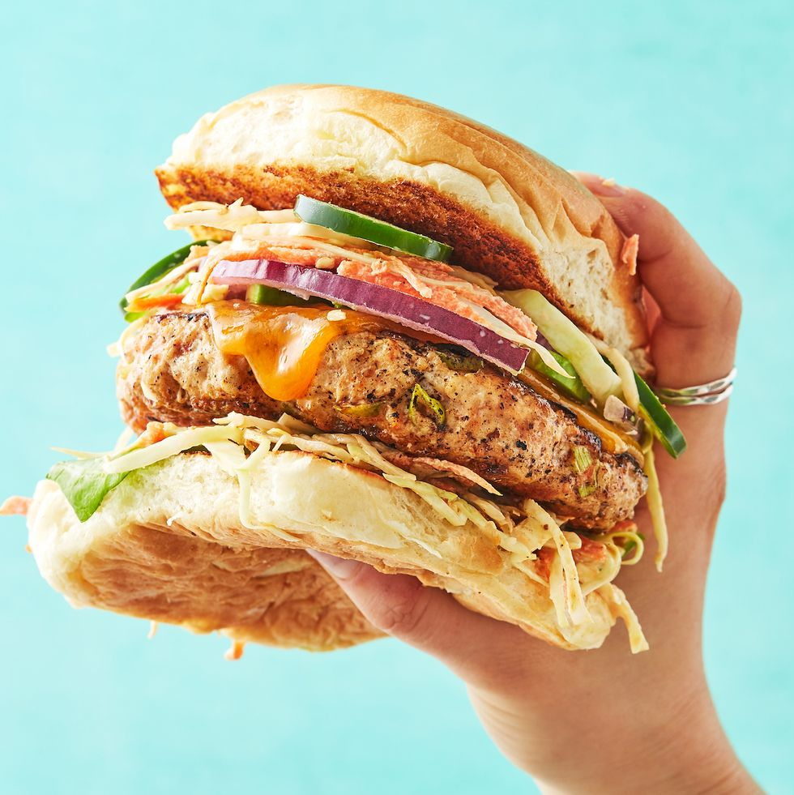

Chicken Burger

The best Chicken Burger you'll ever taste!
We all know that beef gets the spotlight when it comes to classic burgers, but when it comes to alternatives, chicken burgers can get a bad rap.
If chicken burgers haven't been your fave in the past, trust us—our easy, flavorful recipe will make you a believer.
Ingredients
- 1 1/2 lb. ground chicken
- 3/4 tsp. smoked paprika
- 1 clove garlic, minced
- 3 scallions, minced
Steps
- In a large bowl, combine chicken, paprika, garlic, and green onions, and season with salt and pepper. Divide mixture into 4 patties.
- In a large skillet over medium heat, heat oil. Add burger patties and cook, flipping once, until golden and a thermometer inserted into the center registers 165°, 8 to 10 minutes. Top with cheddar, cover, and cook until just melted, 2 minutes. Remove from heat and transfer patties to a plate.
- Stack lettuce, coleslaw, chicken burgers, avocado, red onion, jalapeño, and more coleslaw on top of bottom buns. Close sandwiches with top buns.